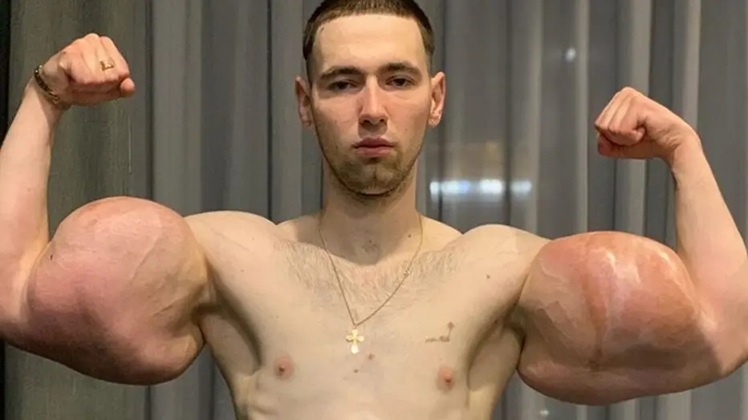

Företaget grundades 1999 då grundaren Edwin Almroth bestämde sig för att göra bätre mat för befolkningen efter att han hade insett hur dålig mat som fanns i butikerna och snabbmatskedjor, han jobbade hos NASA som en austronaut i 2 år för att ha råd att starta företaget. Det började långsamt för oss, ingen ville beställa mat och företaget gick back för det fanns en massa ingredienser som låg och ruttnade men 2005 så ville alla ha maten.

Jag har alltid varit intresserad av träning och att vara hälsosam och därför valde jag att studera vilken mat som var bäst för dig. Då märkte jag att det inte fanns några bra allternativ så jag skapade mitt eget företag där vi säljer nyttig mat som man kan tillaga snabbt.
Här skriver du innehållet för denna sida.